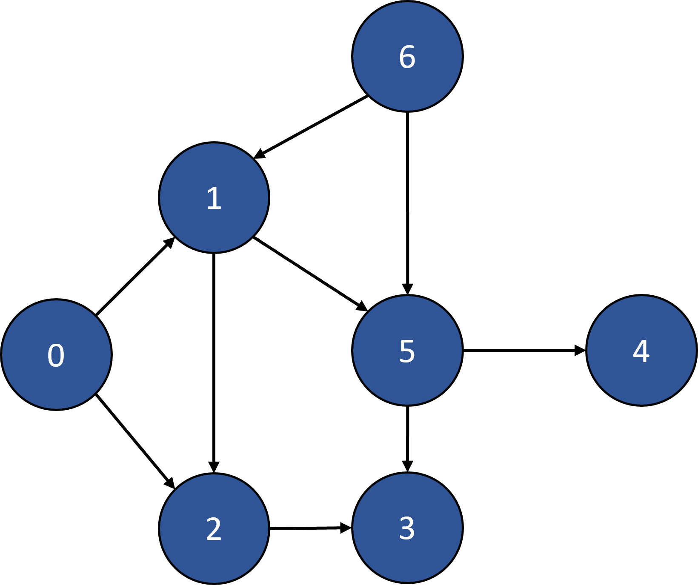
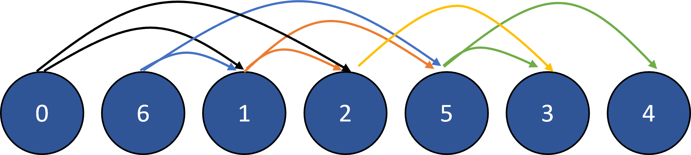

Topological sort
Topological sort or topological ordering of a directed graph is a linear ordering of its vertices and only possible if and only if the graph has no directed cycles, that is, if it is a directed acyclic graph (DAG). Any DAG has at least one topological ordering. Topological sorting has many applications especially in ranking problems such as feedback arc set. The vertices of the graph may represent the tasks to be performed, and the edges may represent constraints that one task must be performed before another.
This algorithm is thus responsible for taking a directed graph and returning an array of the nodes in the order of their reference. This algorithm gives the linear order of vertices in a directed graph. The sorted graph is as following:
A topological ordering is, simply said, just a valid sequence for the tasks. In bnlearn we can also derive the topological ordering of the graph.
Real-time Applications
Manufacturing workflows, data serialization, Critical path analysis, Sentence ordering, and context-free grammar.
Scheduling jobs that are interdependent on each other.
Operation system deadlock detection (As the algorithm decides on what task should be done before a particular task can be started.)
Lets create the underneath DAG and examine the topological ordering of 1. the entire graph, and 2. using a starting point in the graph.
 |
Topological ordering example 1
# Import bnlearn
import bnlearn as bn
# Set Edges in graph
edges = [
('0', '1'),
('0', '2'),
('1', '2'),
('1', '5'),
('2', '3'),
('5', '3'),
('5', '4'),
('6', '1'),
('6', '5'),
]
# Make the actual Bayesian DAG
DAG = bn.make_DAG(edges, verbose=0)
# Plot
bn.plot(DAG)
# Topological ordering of the entire graph
bn.topological_sort(DAG)
# ['0', '6', '1', '2', '5', '3', '4']
# Topological ordering using starting point in graph
bn.topological_sort(DAG, '2')
# ['2', '3']
 |
It is also possible to examine the topological ordering of your learned DAG using structure learning.
Topological ordering example 2
# Import bnlearn
import bnlearn as bn
# Import DAG
DAG = bn.import_DAG('sprinkler')
# Generate data using the DAG
df = bn.sampling(DAG, n=1000, verbose=0)
# Structure learning
model = bn.structure_learning.fit(df, methodtype='chow-liu', root_node='Wet_Grass')
G = bn.plot(model)
# Topological ordering of the entire graph
bn.topological_sort(model)